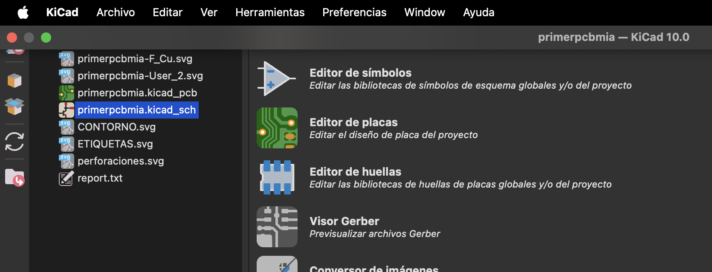
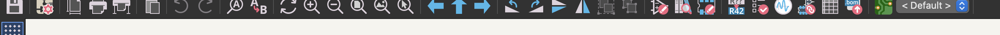
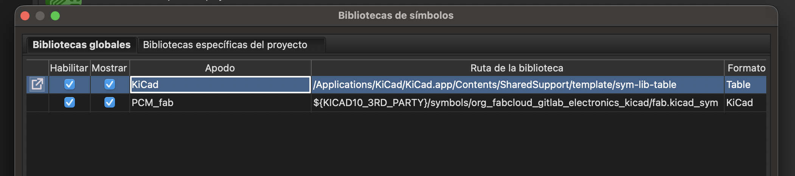

⌂
Inicio del proyecto
Desde la pantalla principal administramos los archivos del proyecto y abrimos las herramientas de diseño.
Documentamos el proceso completo de una PCB: desde el esquemático y la elección de componentes hasta el ruteo, la validación, la exportación y la preparación de archivos para fabricación.
Producción Electrónica busca que aprendamos el proceso completo detrás de un circuito impreso: del esquemático a la placa terminada, pasando por el diseño de pistas, la fabricación digital y el ensamble final.
Cada práctica es un paso más hacia el proyecto final del curso. Aquí reunimos el procedimiento, las herramientas, los componentes y los parámetros de fabricación en un solo lugar. Toca el título para desplegar el detalle.
Esta práctica cubre el proceso completo de una PCB de principio a fin: diseñamos el circuito y el ruteo en KiCad, convertimos los SVG exportados en rutas de fresado con Mods CE y finalmente fabricamos la placa físicamente en la MonoFab SRM-20. Usa las pestañas de abajo para ver el desglose completo de cada una de las tres partes.
Estas son las etapas que seguimos desde que abrimos KiCad hasta dejar listos los archivos de salida para continuar con la fabricación.
KiCad es una aplicación de diseño electrónico con la que podemos crear el esquema eléctrico de un circuito y después convertirlo en el diseño físico de una PCB. Para esta práctica usamos principalmente los módulos siguientes.
Desde la pantalla principal administramos los archivos del proyecto y abrimos las herramientas de diseño.
Aquí colocamos símbolos, alimentación, etiquetas y conexiones para representar el circuito eléctrico.
Importamos las huellas del esquemático, acomodamos los componentes y dibujamos las pistas de cobre.
Convierte imágenes en elementos que pueden integrarse al diseño cuando la práctica lo requiere.
Permite administrar plugins, contenido y librerías adicionales para ampliar los componentes disponibles.
KiCad se descarga desde su sitio oficial. Se selecciona el sistema operativo, arquitectura y versión apropiada.


